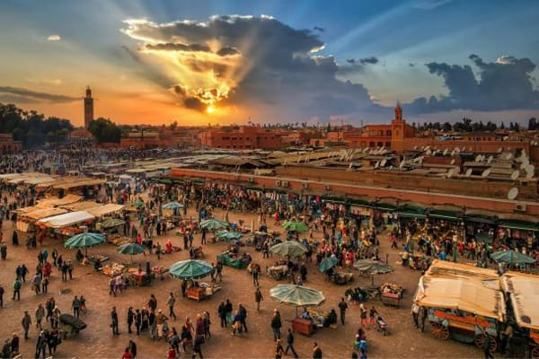
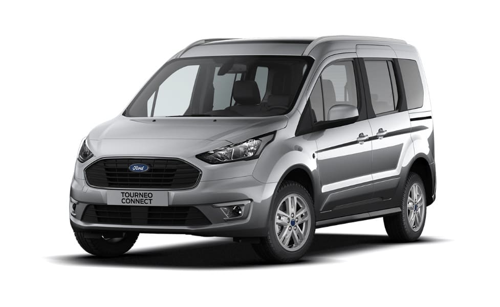
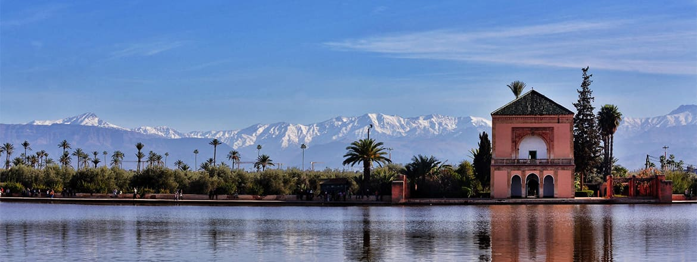
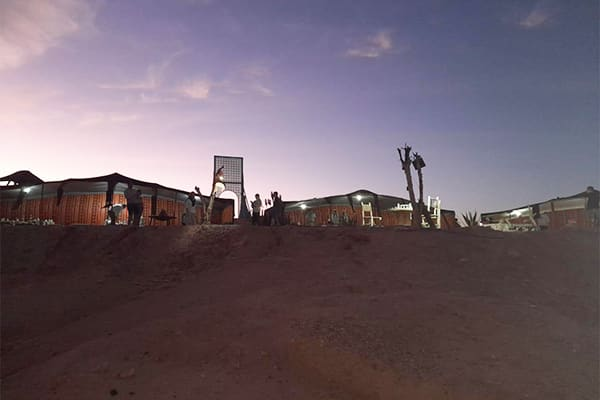
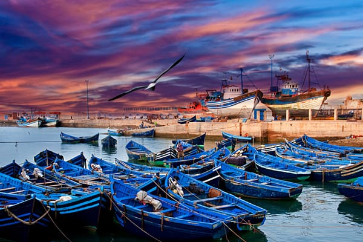
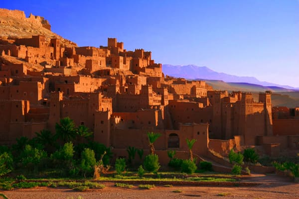
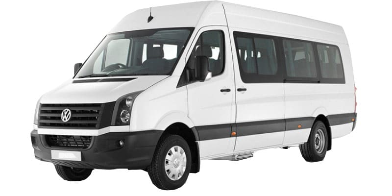
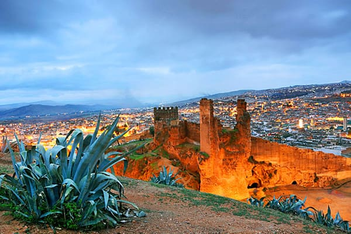

01
01
Navettes aéroport
Un chauffeur vous attend à l'aéroport Marrakech-Menara et vous conduit directement à votre hébergement.
Voir le détailMarrakech et tout le Maroc, depuis 2007
Navette aéroport, taxi privé, minibus avec chauffeur, excursions et circuits. Vous réservez à distance et vous connaissez le prix avant de monter à bord.
4,9 sur 5 · 739 avis de voyageurs


1000passagers en simultané, capacité annoncée
4,9 sur 5
739 avis de voyageurs
Agence agréée
Décision ministérielle PCT/ATT.T/8/2012, en activité depuis 2007
Tarif fixe
Annoncé avant le départ, net à payer. Aucun frais d’attente, aucune majoration de nuit
Toujours un chauffeur
100 % des véhicules partent avec leur chauffeur, assurance des passagers comprise
Nos services
Du transfert d’aéroport au circuit de cinq jours, la même règle : un tarif par véhicule, annoncé à l’avance et net à payer.
01
Un chauffeur vous attend à l'aéroport Marrakech-Menara et vous conduit directement à votre hébergement.
Voir le détail 02
02
Vous voyagez en groupe et vous préférez laisser conduire. Nous mettons à votre disposition un véhicule et son…
Voir le détail
03Visitez la médina de Marrakech, place Jamaa Lefna, et monuments historiques, une balade pour découvrir l’histoire…
Voir le détail 04
04
Un circuit classique de deux jours et une nuit vers Zagora et les dunes de Tinfou depuis Marrakech en passant par Ait…
Voir le détailÀ la journée
Départ depuis votre hébergement le matin, retour le soir. Le tarif s’entend par véhicule, jamais par personne.
Visitez la médina de Marrakech, place Jamaa Lefna, et monuments historiques, une balade pour découvrir l’histoire…
Voir le détail
Une aventure inoubliable pour découvrir les étendues du désert d'Agafay et admirez un coucher de soleil magique.
Voir le détail
Excursion d’une journée au départ de Marrakech pour découvrir l’ancienne médina d’Essaouira, son ancien port…
Voir le détail
Un tour dans la vallée de l’Ourika et ses 7 cascades en une journée avec une randonné facile au pied de l’Atlas et au…
Voir le détail
En destination du sud de Marrakech un passage par le col de Tizi N'Tichka à 2260 m d'altitude vous permettra de…
Voir le détail
Un circuit de rêve au départ de Marrakech pour visite du village d’Asni, Tahanaout avant d’arriver à la belle vallée…
Voir le détailLa flotte
Véhicules récents et climatisés. Chacun part avec son chauffeur : nous ne faisons jamais de location sans conducteur.

4 places

4 à 7 places

14 à 18 places
29 à 48 places
Transport d’événement
Une flotte qui peut déplacer jusqu’à 1000 passagers simultanément, un plan de mouvement étudié étape par étape, des interlocuteurs joignables 24 h sur 24.
Notre offre événementiel
De deux à cinq jours
Merzouga, Zagora, les gorges du Dadès ou les villes impériales. Vous choisissez les étapes, nous organisons les routes et les temps de trajet.

Un circuit classique de deux jours et une nuit vers Zagora et les dunes de Tinfou depuis Marrakech en passant par Ait…
Voir le détail
Excursion à Ouarazazate et Ait Ben haddou et une balade dans les gorges de Toudra et de Dadès, pour découvrir les…
Voir le détail
Découvrir en deux jours et une nuit les gorges de Dadès et les gorges de Toudra connues par ses hautes falaises…
Voir le détail
Un voyage de deux jours et une nuit pour découvrir la beauté de l’Atlas, la rivière et le lac de Bin El Ouidane, en…
Voir le détail
Un circuit magique pour découvrir l’histoire des villes impériales du Maroc, sites historiques, palais majestueux…
Voir le détailVotre devis
Indiquez votre trajet ou votre programme, vos dates et le nombre de passagers. Nous répondons avec un tarif fixe, net à payer, sans frais d’attente ni majoration de nuit.
Trans Marrakech (Anaconda Tours - Trans Marrakech SARL) organise votre transport à Marrakech et dans tout le Maroc depuis 2007. Navette aéroport, taxi privé, location de minibus avec chauffeur, excursions à la journée, circuits dans le désert : vous réservez à distance et vous connaissez le prix avant de monter à bord. Société de transport agréée par le ministère de l'équipement et du transport (décision PCT/ATT.T/8/2012), notée 4,9 sur 5 par les voyageurs qui l'ont réservée avant vous.
Le chauffeur vous attend à la sortie du terminal, une pancarte à votre nom à la main, et vous conduit à votre hôtel ou votre riad. Le tarif est fixe, annoncé à l'avance, net à payer, sans majoration de nuit. Si votre vol a du retard, nous suivons son numéro et le chauffeur patiente. Aucun frais en plus.
Un van, un minibus de 14 à 18 places ou un autocar, selon la taille de votre groupe, avec un chauffeur qui connaît la région. Vous fixez le programme de la journée et vous vous arrêtez où vous voulez. Le carburant est à votre charge ou compris selon la formule ; les frais du chauffeur sont toujours inclus.
Vallée de l'Ourika, Imlil, cascades d'Ouzoud, Essaouira, Aït Ben Haddou, désert d'Agafay. Départ depuis votre hébergement le matin, retour le soir. Le tarif s'entend par véhicule, jamais par personne, quelle que soit la catégorie réservée.
De deux à cinq jours vers Merzouga, Zagora, M'Hamid ou les villes impériales. Vous choisissez les étapes, nous organisons les routes, les temps de trajet et l'hébergement. Circuit personnalisé ou formule prête à réserver, à votre convenance.
Indiquez votre trajet ou votre programme, vos dates et le nombre de passagers. Nous vous répondons avec un devis au tarif fixe. Une fois le transport confirmé, vous recevez le nom du chauffeur, la marque du véhicule et son immatriculation.